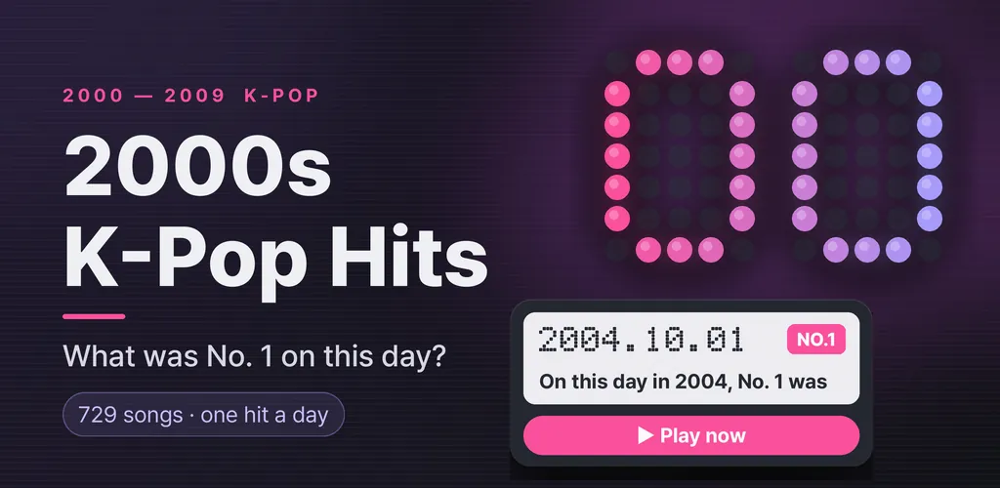
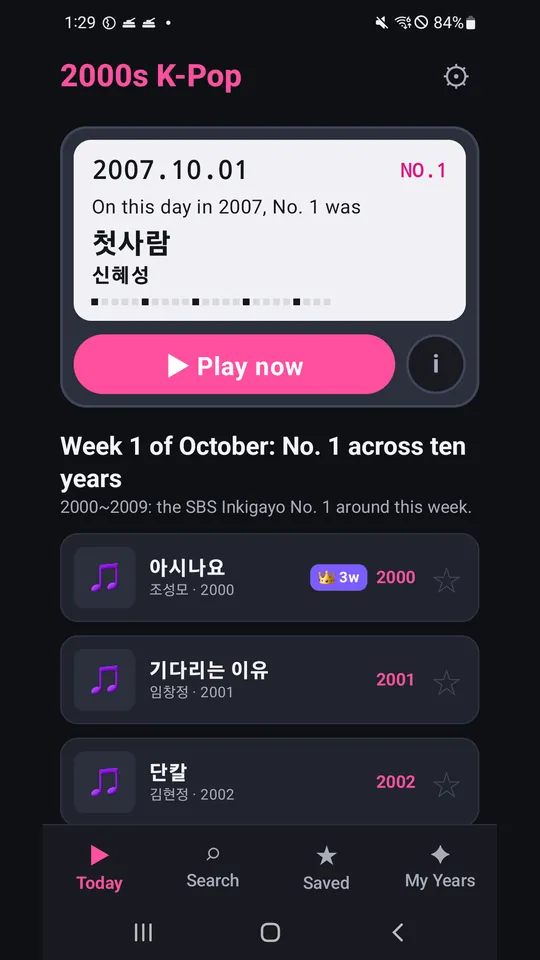
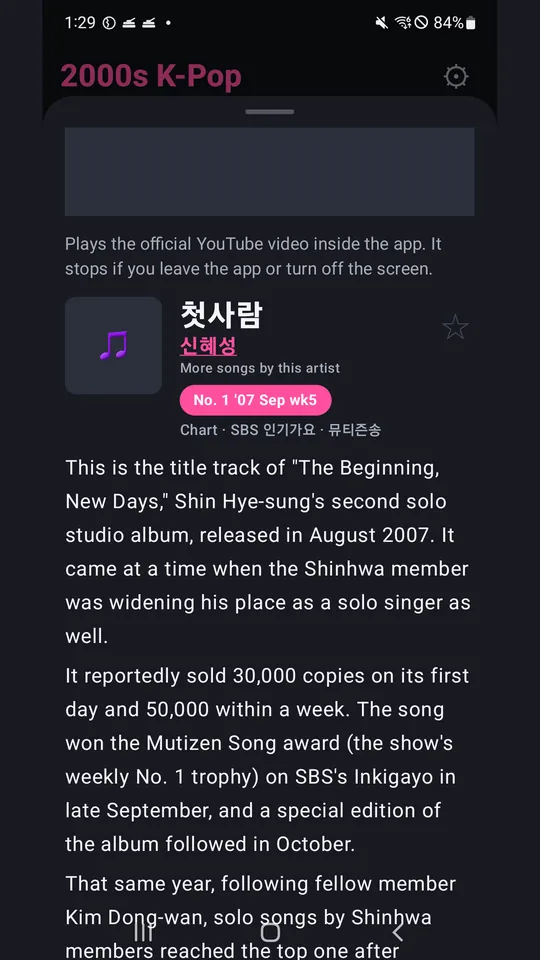
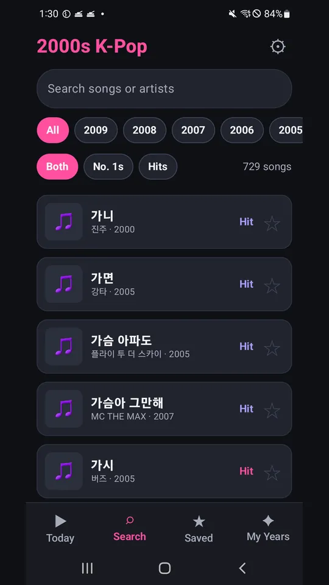
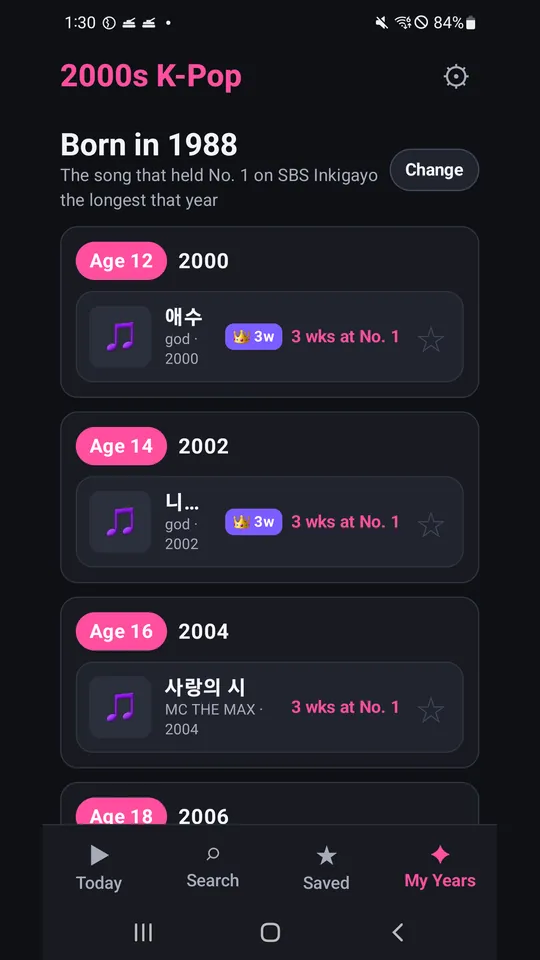

2000s K-Pop Hits: Time Machine
Your daily dose of 2000s K-pop. Dance hits and ballads from 2000 to 2009.





About this app
"Today, back then, this song was No. 1."
Remember the Korean pop that filled the 2000s - the MP3 players, the karaoke rooms, the songs you picked as your homepage background music?
2000s K-Pop brings back the song that topped a weekly TV music chart on this very week, plus the biggest songs of each year, from 2000 to 2009. That is 729 songs, one a day.
■ Today, back then
- The home screen opens with "this day, back then" - one tap and the video plays.
- All ten years, 2000 to 2009, take turns every ten days.
- Below it, this week's No. 1 song from each of the ten years, side by side.
- Every night, a notification brings you the day's throwback (you can turn it off in Settings).
■ My Years
- Pick your birth year and see the No. 1 songs from every other year between ages 12 and 26.
- Turn your timeline into a card and share it with friends.
- Your birth year stays on your phone.
■ 2000s K-pop hits, year by year
- Browse 466 weeks of chart-toppers, year by year.
- Plus the songs that never quite reached the top but defined their year - the ballads everyone sang at karaoke, the dance tracks everyone knew.
- Tap a year in Search to sweep through it, and filter by No. 1s or Hits.
- Half-remember the title? Common nicknames find the song too.
■ The story behind each song
- Short, casual notes on the song, the stage and the moment, written one by one. English notes cover all 263 No. 1 songs.
- How many weeks at No. 1, and the longest run in a row.
- Lyricist, composer, album info and cover art in one place.
- Tap an artist's name to see their other songs.
■ Listen now
- For most songs, watch the official video right inside the app in the official YouTube player.
- Jump to another music app to keep listening.
■ Saved songs and sharing
- Star the songs you loved into your own 2000s list.
- Turn a song into a card and send it with "remember this?"
Song info and notes are bundled in the app, but video playback and album art need an internet connection. Videos play in the official YouTube player inside the app and stop when you leave the app or turn off the screen.
The app is supported by ads: a banner at the bottom of the screen and interstitial ads. Videos play only in the official YouTube player; the app never downloads or stores any audio.
Android · free with ads · Developer: RealTunaLove · Store listing in 17 languages
Background story: why I built it